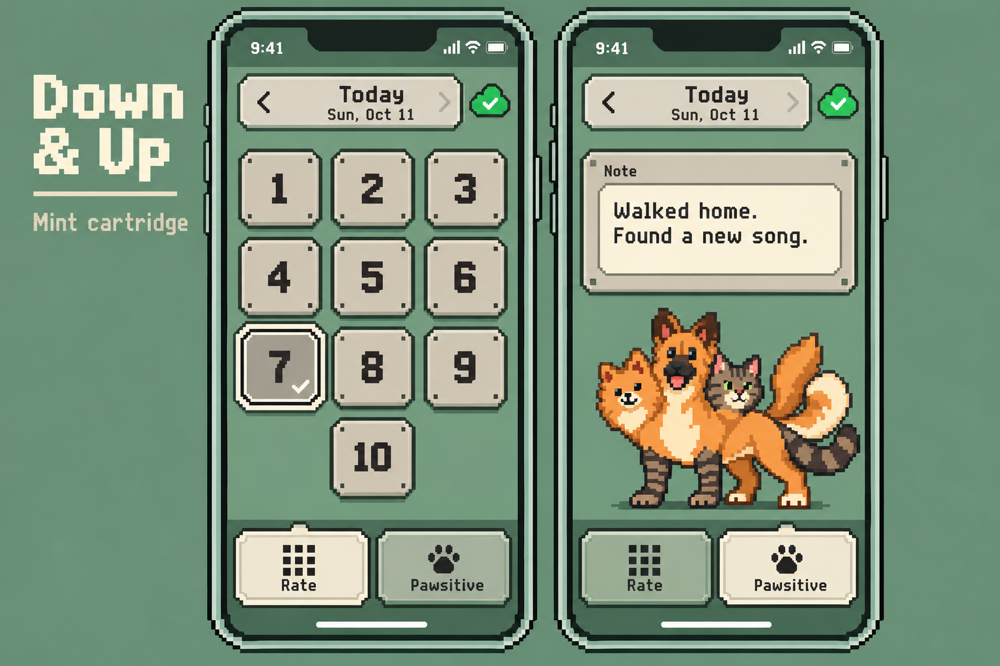
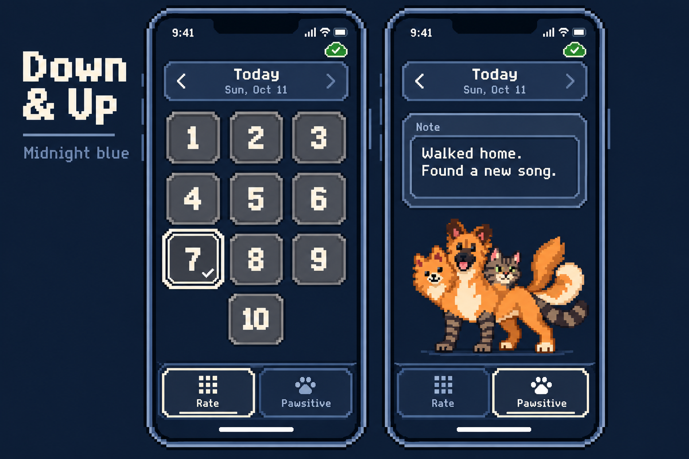
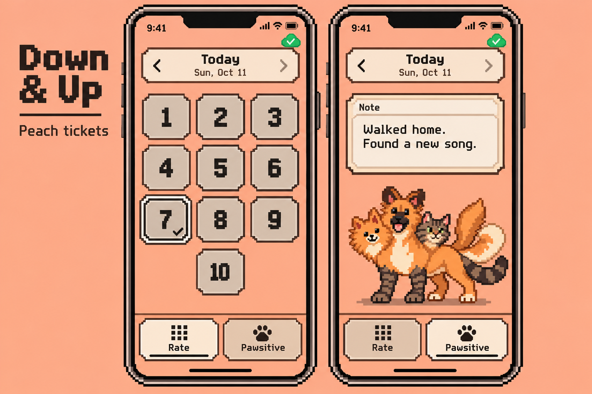
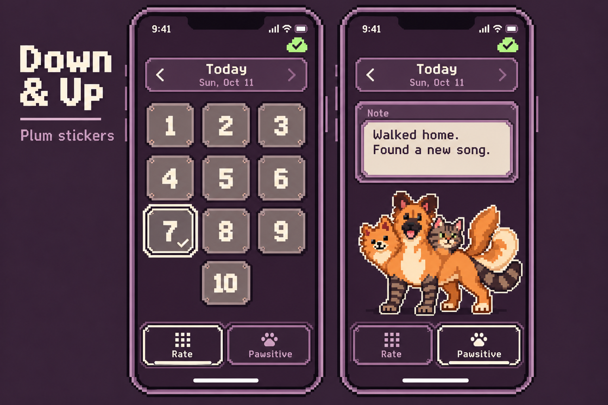
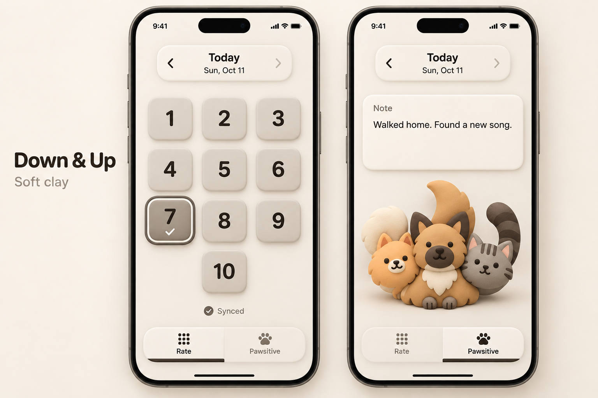
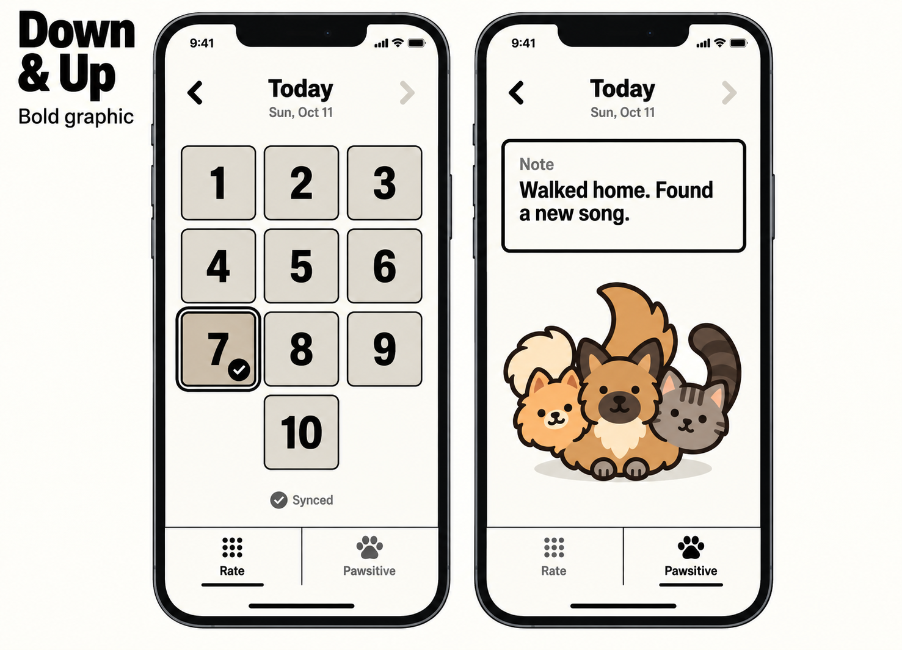
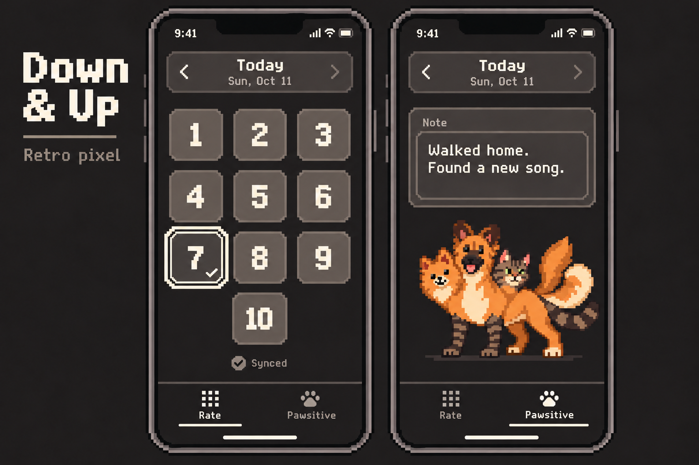
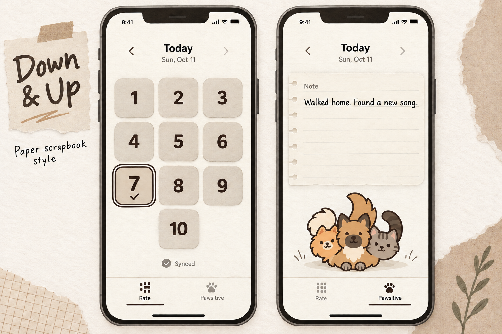
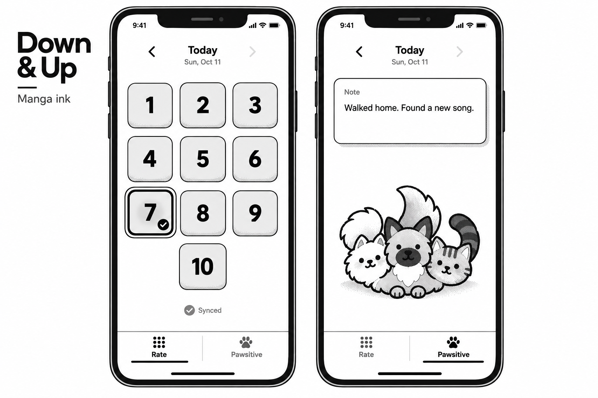

Retro pixel.
Retro pixel is the selected direction. Explore four new palettes and custom pixel-art buttons and tabs below; the five original style studies are preserved further down.
Read the direction note and exact new prompts. The native icon is updated; these UI treatments remain concepts.















